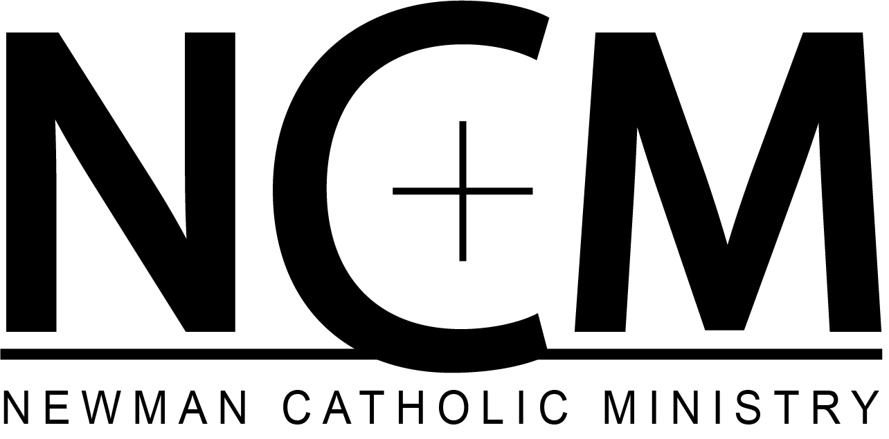

<!--FontAwesome Icons-->
<link rel="stylesheet" href="https://use.fontawesome.com/releases/v5.9.0/css/all.css">

<!--Navbar-->
<nav class="navbar" role="navigation" aria-label="main navigation">
  <div class="navbar-brand">
    <a class="navbar-item" href="https://newmanutd.org">
      
    </a>

    <a role="button" class="navbar-burger burger" aria-label="menu" aria-expanded="false" data-target="navbarMenu">
      <span aria-hidden="true"></span>
      <span aria-hidden="true"></span>
      <span aria-hidden="true"></span>
    </a>
  </div>

  <div id="navbarMenu" class="navbar-menu">
    <div class="navbar-start">
      <a routerLink="" class="navbar-item">Home</a>
      <a routerLink="events" class="navbar-item">Events</a>
      <a routerLink="support-ncm" class="navbar-item">Support Us</a>
      <a routerLink="get-involved" class="navbar-item">Get Involved</a>
      <a routerLink="about-ncm" class="navbar-item">About Us</a>
    </div>
    <div class="navbar-end">
        <a href="http://bit.ly/join-ncm" class="navbar-item"><i class="fab fa-slack"></i></a>
        <a href="https://www.instagram.com/ncm_utd/" class="navbar-item"><i class="fab fa-instagram"></i></a>
        <a href="https://www.facebook.com/utdcatholic" class="navbar-item"><i class="fab fa-facebook"></i></a>
    </div>
  </div>
</nav>